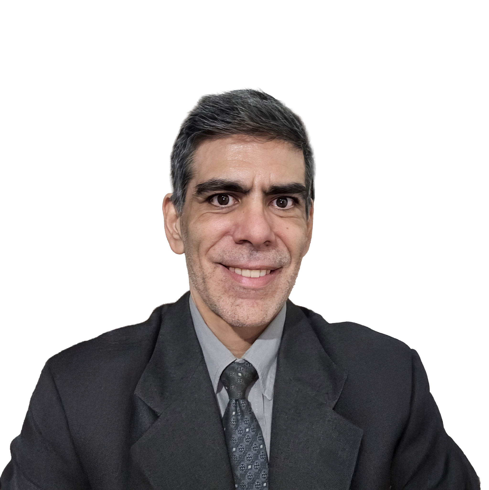

¿Qué hacer si el seguro rechaza un siniestro?
Qué documentación revisar, qué comunicación conservar y por qué conviene analizar la causa del rechazo antes de dar el reclamo por terminado.
Analizamos el reclamo desde la póliza hasta la respuesta de la aseguradora. Y si todavía no ocurrió nada, también te ayudamos a contratar una cobertura que tenga sentido para tu riesgo.
El foco de esta web es claro: siniestros, reclamos de seguros y asesoramiento jurídico frente a aseguradoras.

La misma situación puede involucrar condiciones de póliza, plazos, documentación, valuación del daño, responsabilidades y comunicaciones de la compañía. P&A Group combina ambas miradas: la del productor de seguros y la del abogado.
El sitio está pensado para responder búsquedas concretas. Cada tipo de conflicto puede convertirse después en una página SEO propia con información específica.
Choques, daños, reclamos propios o de terceros y análisis de cobertura.
→ 02Revisión de la causa informada por la compañía y de la documentación del caso.
→ 03Análisis de ofertas, valuaciones y condiciones antes de aceptar un acuerdo.
→ 04Seguimiento del proceso, documentación y criterios de indemnización.
→ 05Cuando el trámite deja de ser simple y necesitás una lectura jurídica del conflicto.
→ 06Orientación inicial frente a accidentes laborales o coberturas personales.
→Antes de cerrar un siniestro conviene entender qué cubre la póliza, qué documentación se presentó, cómo se calculó la indemnización y qué efectos tiene aceptar una propuesta.
Revisar mi caso →Diego Moreira es abogado y productor de seguros, y lidera el trabajo de P&A Group.
Ese doble rol permite analizar un siniestro entendiendo tanto el contrato de seguro como el conflicto jurídico que puede aparecer detrás del reclamo. La propuesta de la firma parte de esa combinación: prevención, cobertura y acompañamiento cuando existe un problema.
Un reclamo sólido empieza con una lectura ordenada del caso. La web traduce ese proceso en cuatro pasos simples.
Identificamos el tipo de siniestro, la cobertura involucrada y el estado actual del reclamo.
Póliza, denuncia, comunicaciones, presupuestos y demás elementos relevantes.
Explicamos qué puntos requieren atención y qué alternativas pueden existir.
El siguiente paso depende del caso, la respuesta de la compañía y la estrategia definida.
P&A Group también trabaja como productor de seguros. La contratación queda integrada a la propuesta, pero sin competir con el posicionamiento principal del sitio: siniestros.
Coberturas según uso, vehículo y nivel de protección buscado.
Protección de vivienda, contenido y responsabilidades vinculadas.
Coberturas para actividad comercial, bienes y riesgos operativos.
Alternativas de protección personal y familiar.
Soluciones para empleadores según la actividad y la estructura de trabajo.
Coberturas para actividades o prestaciones que requieran protección específica.
Esta sección funciona como la base de un futuro cluster SEO. Cada tema puede tener su propia URL y atacar una intención de búsqueda concreta.
Qué documentación revisar, qué comunicación conservar y por qué conviene analizar la causa del rechazo antes de dar el reclamo por terminado.
Una guía orientada a ordenar los primeros pasos, la denuncia, la documentación y la relación con las compañías involucradas.
Qué aspectos conviene observar antes de aceptar una propuesta y cerrar definitivamente el siniestro.
Información general sobre cobertura, documentación y criterios que pueden intervenir en una indemnización.
Una introducción al reclamo frente a la compañía del tercero y a los documentos que suelen formar parte del trámite.
Conviene revisar la póliza, la denuncia, la documentación presentada y la comunicación donde la compañía fundamenta el rechazo.
Sí. Una revisión temprana puede ayudar a entender qué documentación falta, qué puntos requieren seguimiento y qué efectos puede tener una propuesta de acuerdo.
Sí. La firma combina producción de seguros con asesoramiento jurídico en siniestros y reclamos.
No. El foco inicial del sitio está en siniestros y seguros, con especial presencia de automotores, pero la propuesta también contempla otros riesgos y coberturas.
No hace falta que tengas resuelto qué reclamar. La primera información útil es saber qué ocurrió, qué seguro interviene y qué respuesta recibiste hasta ahora.